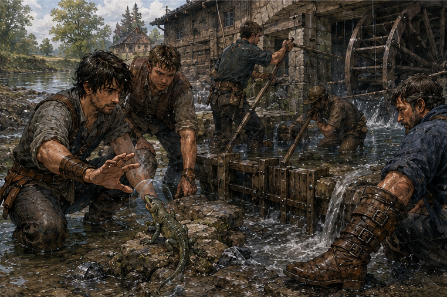
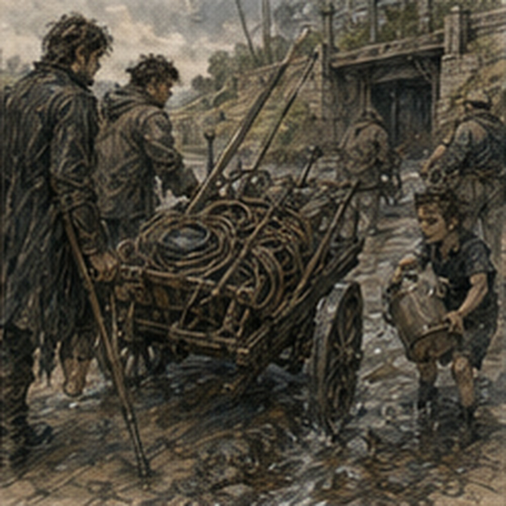

I decided at noon. This was later than Berren wanted and earlier than Antonius would have respected. The decision itself was not difficult. Four copper. Meal. Half a day. Possible river lizards. The difficulty was admitting that none of those explained why I wanted to go.
I had work available elsewhere. Arlo had given me a regulator to test. Antonius could always find something that needed counting, moving, pricing, or arguing over. Edrin had actual magical material under examination. Hessa would see me the next morning if my channels remained quiet.
The millrace paid less than several better uses of my time. I went to the Guild anyway. Berren had already signed my name. I stared at the sheet. He stood beside me on his rebuilt boot.
“What?”
“You signed my name.”
“You said maybe.”
“That is not yes.”
“It was becoming yes.”
“You cannot sign other people onto contracts.”
“You can erase it.”
I looked at the clerk. The ink-thumbed clerk looked back at me.
“Can I erase it?”
“No.”
Berren smiled. The clerk continued.
“I can strike it and note declined.”
Berren stopped smiling. I considered. There it was. Permission. Actual choice. I could walk away. I looked at the contract again.
WEST MILLRACE GATE.
CLEARING AND WATCH.
TWO BRONZE MINIMUM.
THREE PREFERRED.
FOUR COPPER EACH.
MEAL PROVIDED.
My name sat beneath Berren’s in handwriting that did not resemble mine.
“Leave it.”
Berren smiled again. I pointed at him.
“Do not do that again.”
“Unless you mean yes?”
“Especially then.”
The clerk said, “Initial.” I initialed beside the false signature. Now it was my mistake. Better. We left through the west gate just after noon with a mill worker named Ossin and a handcart full of rope, two shovels, a pry bar, three hooked poles, and enough bread to make the contract’s meal clause technically true.
Ossin was fifty or close to it, thick through the chest, gray beard cut short, left thumb missing above the first joint. He walked faster than Berren. This annoyed Berren. I enjoyed it. The west mill sat less than three miles outside the city where a narrow river had been bullied into usefulness. The main channel continued south.
The millrace split west through a stone gate and ran beside a low embankment toward a broad timber building whose wheel had stopped. No wheel meant no grinding. No grinding meant sacks waiting. Sacks waiting meant people losing money. Ordinary catastrophe. Six workers were already at the gate. None looked relieved to see adventurers. Good.
A woman in rolled trousers stood knee-deep in the race with a hooked pole. She looked at Berren’s boot.
“No,” she said.
Berren stopped.
“What?” Berren asked.
“You’re not going in,” she said.
“I’m hired.”
“You’re hired to clear and watch.”
“Yes.”
“You can watch from dry stone.”
“I can clear.”
“You can clear from dry stone.”
He looked at me. I did not help. The woman pointed at a pile of debris jammed against the gate. Branches. Reeds. Two broken boards. A dead goat. That last part complicated the smell.
“Water came up two nights ago,” she said. “Gate dropped crooked. Debris packed behind it. We need the channel clear enough to lift and reseat.”
“Why adventurers?” I asked.
“Because last time Dovan got bit.”
A worker on the bank lifted his trouser leg. Two small scars above the ankle.
“River lizard,” he said.
“How large?”
He held his hands about two feet apart. Berren looked disappointed. I liked him less for three seconds. The woman said, “You kill anything that comes out. Mostly you pull rubbish.”
“Who controls the lift?”
“I do.”
Good.
“What’s your name?”
“Etta.”
“Greg.”
“I know. Guild slip.”
Right. Berren said, “Berren.”
“I know. Limp.”
He frowned. I smiled. Etta handed me a hooked pole.
“Start there.”
No briefing. No theory. Work. The first branch came free easily. The second did not. I planted my feet on wet stone and pulled. Nothing. Adjusted angle. Pulled again. The branch shifted half an inch. My ribs complained. Not sharply. Enough. I changed hands. Berren reached for the pole.
“I have it.”
“You don’t.”
“I do.”
“You made a face.”
Everyone. I let him take the upper grip. He braced from the dry bank. We pulled together. The branch came free suddenly. Both of us nearly went backward. Ossin caught Berren by the collar. I caught myself. Berren looked at him. Ossin released him.
“Four copper,” he said.
Apparently that explained gravity. We dragged the branch onto the bank. Then another. Then reeds. Then a length of fence. Etta identified it as a chicken run from upstream.
“How do you know?”
“Mine.”
She kept working. Of course. The dead goat required rope. Berren volunteered. Etta said no. He argued. She pointed at his boot. He said the foot was fine. She said she did not care. He looked at me. Again. I said, “She controls the lift.”
“That has nothing to do with the goat.”
“It means this is her worksite.”
He stared at me. I was right. Also irritating. He knew both.
“Fine.”
He took watch on the bank with one of the hooked poles. I tied the goat. Badly. Not dangerously. Just inefficiently. Ossin watched me redo the knot twice.
“Adventurer?”
“Yes.”
“Not sailor.”
“No.”
He took the rope. One loop. Under. Back. Tight. The goat came out. I watched his hands.
“Again.”
He showed me. I copied. Wrong. Again. Better. Third time. Good enough. Ossin nodded. That pleased me more than it should have. Young Greg had known knots. Probably. Future Greg knew several. My hands did not. Or knew different ones.
Memory offered a dungeon harness knot involving two loops and a locking turn. Wrong application. I left it alone. By the time the main debris pile was half cleared, my shirt was wet through from sweat and spray. The day was warm. The water was cold. My shoulders burned. Forearms worse. No mana. No spell pressure. Just work. I had forgotten how direct that could be.
Pull. Lift. Carry. Throw. Again. Nothing abstract. Nothing waiting thirty years to matter. At one point I stood ankle-deep in the race holding a broken board while Etta cut away reeds tangled around it. The current pushed against my calves. Not hard. Persistent. My young legs adjusted constantly. Tiny corrections. Heel. Knee. Hip. Balance happened before thought. Interesting. I almost started analyzing it.
Then the board slipped. Etta said, “Hold.” I held. Better use of attention. A river lizard appeared after perhaps an hour. Berren saw it first.
“Left.”
I turned. Gray-green body between stones. Long tail. Flat head. Maybe eighteen inches. Not two feet. It opened its mouth. Small teeth. Angry. Berren raised the hooked pole. The lizard ran at him. He stepped back. Good. Not because of fear. Because his right foot did not want the turn. The lizard changed direction toward the water. I could cast. Tiny Barrier.
Coin-sized. Redirect at the nose. Easy. Probably. No. Etta threw a shovel. Not the blade. The flat side struck the lizard behind the head and knocked it into the shallows. Ossin grabbed the tail with a hook and flung it onto the far bank. It ran away. Berren stared. Etta retrieved her shovel.
“What?”
Berren said, “We’re here for that.”
“You were slow,” Etta said.
“I was not,” Berren said.
“You were,” Etta said.
He looked at me. I had seen it. He knew. His first movement had been correct. His second had hesitated because the lizard was smaller than the threat he had prepared for. He had expected fight. Etta expected nuisance. Different objective. I could explain that. He already looked annoyed enough to be thinking. I picked up reeds. Berren said, “Nothing?”
“What?”
“You always have something.”
“I am working.”
He narrowed his eyes. Then laughed.
“Fuck you.”
“Probably.”
We kept working.

Ten minutes later another lizard surfaced beside my boot. I moved faster than thought. Young reflex. My foot came up. The lizard darted. I put a coin-sized Barrier on the stone beside its head. Not in front. Beside.
It turned away from the pressure change and ran straight into Berren’s waiting hook. He lifted. Not hard. Just enough to redirect it onto the far bank. The lizard vanished into grass. Berren looked at me.
“That was magic?”
“Yes.”
“That?”
“Yes.”
“Terrible.”
“Yes.”
“Useful.”
“Yes.”
He smiled. I did too. No pain. No pressure. Channels quiet. One small cast. Done. I wanted another. There were no lizards. Inconsiderate. The gate itself was worse than the debris. Once enough rubbish had been cleared, Etta had two workers fit a chain to the upper beam. Ossin and I took the capstan. Berren moved toward us. Etta pointed at the bank.
He stopped.
“I can turn a capstan.”
“You can also tear your foot open.”
“It is closed.”
“For now.”
“I am being paid four copper.”
“So watch four-copper lizards.”
He muttered something. She ignored him. The capstan moved. Slow. Wood complained. Chain tightened. The gate lifted three inches. Water punched through beneath it. Everyone shouted at once. Not panic. Coordination.
“Hold.”
“Left brace.”
“Clear.”
“Again.”
The race changed shape around my legs. Current stronger. Cold water to my knees. My body reacted. Heart faster. Grip tighter. Balance. The gate rose another inch. A mass of reeds and mud tore loose and hit me in the thigh. I nearly fell.
Ossin leaned into the bar and caught my shoulder with his missing-thumb hand.
“Feet.”
I reset. Again. No embarrassment. No time. Work. The gate came up enough for Etta to see beneath it.
“Stop.”

We stopped. She crouched in the water. Reached under. I watched. Not because I wanted to improve her. Because she knew what she was doing. She felt along the stone channel with both hands. Then swore.
“What?”
“Pin seat chipped.”
One of the workers swore too. Berren called from the bank, “Bad?” Etta stood.
“Annoying.”
Good category.
“What does that change?” I asked.
“We can reseat it. Won’t hold clean.”
“How long?”
“Maybe a week. Maybe a month.”
“Then?”
“Mason.”
“Why not mason now?”
She looked at me.
“Because the mill is stopped now.”
Right. Objective. Get wheel moving. Perfect gate later. I knew this. Still asked. She pointed at a box of wooden wedges.
“We set temporary. Then clear the lower run.”
I looked at the chipped seat. Could Barrier support it? Small contact point. Temporary load. No. Too much sustained pressure. Wrong tool. Could a tiny Barrier help position the wedge? Maybe. Not necessary. Etta had hands. Workers had wedges. I carried one. The first was too thick. Etta shaved it with a knife. Second fit. Third braced. They lowered the gate. It settled crooked.
Less crooked than before. Water entered the millrace in a controlled sheet. The wheel downstream moved. One turn. Stopped. Then another. Then kept going. Everyone watched. Not reverently. One worker immediately shouted toward the mill. Someone inside shouted back. Machinery began making noise. The contract was not done. Of course.
The lower run had accumulated debris while the wheel was stopped. We walked it. Berren limped more. Not dramatically. Enough. I said nothing. He saw me see.
“Don’t.”
“I didn’t.”
“Good.”
We found a clogged screen behind the mill. Leaves. Straw. A dead chicken. Etta looked at it.
“Not mine.”
Important. We cleared it. By then my hands hurt. Blisters beginning at the base of two fingers. I stared at them. Ridiculous. I had fought creatures in Darrowmere. A millrace was injuring me with wood. Young body. Soft hands. Old memories. I wrapped one palm with cloth. Ossin saw.
“Tomorrow’s worse.”
“Why?”
“Hands know.”
That sounded mystical. It was probably callus. Berren said, “Mine are fine.” I looked. His hands were callused. Hook work. Weapon work. Current body experience. Not future. Actual. He had something I did not. That bothered me. Then pleased me. Then bothered me that it pleased me. Complicated. At the lower screen, Berren finally got to work. Dry bank. Hooked pole. He was good.
Not extraordinary. Good. He knew how to catch debris without burying the hook. Knew when to pull and when to twist. Knew how to let current help. Dema’s hook boy. His pride made more sense when the skill was visible outside class.
He caught a branch, shifted his grip, and rolled it over the stone lip. Clean. I watched. He noticed.
“What?”
“Nothing.”
“Face.”
“Competence.”
“What?”
“You are good at that.”
He looked suspicious.
“At hooks?”
“Yes.”
“I know.”
Good. No false modesty. He hooked another branch.
“I’m better from a cart.”
“Why?”
“Moving angle.”
That interested me. He saw.
“No.”
I laughed.
“Fine.”
“Day after.”
“Maybe.”
“You said tomorrow before.”
“Day after.”
“Right.”
He had forgotten. Or I had. We worked another hour. No more lizards. No monster. No hidden magical mechanism. No suspicious mark beneath the gate. No future-important stranger. Just mud. At some point I realized I was having fun. This was unacceptable. The work was repetitive. The pay mediocre. My shoulders hurt.
Berren complained about his foot every time Etta could not hear and denied it whenever she could. Ossin told the same story twice about a flood from twelve years ago. The mill workers argued about whose dead chicken had entered the screen. Nobody solved it. I was having fun. Not constantly. Enough. Old Greg had remembered Bronze work as waiting. Jobs before real jobs.
Money before real money. Training before real competence. People before important people. That was not entirely false. Some of it had been awful. Some contracts were stupid. Some employers cheated. Young Greg had wasted money, chased praise, picked fights, slept through mornings, and confused being busy with becoming good.
He had also stood in cold water with other idiots and dragged a goat out of a millrace for four copper. Maybe that had been a life too. I pulled another mat of reeds free. It slapped me in the face. Berren laughed so hard he had to sit. I threw mud at him. Bad throw. Hit Ossin. Silence. I looked at Ossin.
Mud on his shirt. He looked at me. Then picked up a handful.
“Oh no.”
He hit me in the chest. Berren nearly fell off the bank laughing. Etta shouted from upstream.
“If one of you falls in, I am not paying extra.”
Work resumed. Mostly. The meal was bread, hard cheese, pickled onions, and cold pork. Excellent. Not objectively. Hunger. We ate sitting on the embankment with the wheel turning behind us. Berren removed his right boot. The sock had a small red stain near the bite. I saw. He saw me see.
“Shut up.”
“I said nothing.”
Ossin said, “You’re bleeding.” Berren looked betrayed. Etta came over. She looked once.
“You’re done.”
“We’re eating.”
“After eating.”
“There’s still lower bank.”
“We have six people.”
“I’m contracted.”
“You watched. You cleared. You’re done.”
He looked at the four-copper contract as if the paper might defend him. I knew exactly what he wanted. Not money. Not entirely. He wanted to finish. To prove the bite had not removed him from ordinary work. Accurate read. Probably. I could support that. Tell Etta he could remain on dry watch. Help rewrap the foot. Adjust tasks. Keep him useful.
I understood the problem. Therefore I knew what should happen next. There. I ate an onion. Berren looked at me.
“What?”
“Nothing.”
“You’re thinking.”
“Yes.”
“About my foot.”
“Yes.”
“Don’t.”
“Fine.”
He waited. Maybe expecting more. I ate cheese. Etta walked away. Berren swore quietly. Then rewrapped the foot himself. Not well. Not terribly. He put the boot back on. Sat. Stayed. No one praised him. Good.
After the meal I returned to the lower bank with Ossin. Berren remained under a tree with the hooked pole across his knees. Watch duty. Still part of the contract. Not the part he wanted. His problem. I checked twice to see whether he was still there. He was. The second time he caught me. He raised one finger. Not the polite one.
I laughed. By late afternoon the race ran clean enough that Etta called it. Not clean. Enough. Important distinction. The wheel turned steadily. The gate leaked around the chipped seat. A mason would come tomorrow. The dead goat was someone else’s problem now.
We walked back toward the city with wet boots and sore shoulders. Berren limped badly enough that Ossin put the handcart beside him. Berren refused. Ossin did not argue. He simply kept the cart there. After half a mile Berren sat on it. No announcement. Ossin pulled. I took the other handle. Berren said, “This is humiliating.”
“Yes.”
“Fuck you.”
“Yes.”
He did not get off. The cart was heavier with him. My arms were already tired. I could feel every incline. Young body. Real weight. No optimization fixed it. We switched with Ossin twice.
At the west gate, the Guild clerk checked the work slip. Etta had marked complete. Four copper. Actual coins. One meal. Half a day. I held the money in my palm. Not much. Enough to sharpen a sword twice. Enough for bad beer and bad chicken and several mistakes. Berren took his four.
“Worth it.”
“Your foot is bleeding.”
“Still worth it.”
“Those statements can coexist.”
“Yes.”
I liked that answer. Ossin headed back toward the mill with the empty cart. He had not been paid four copper. He worked there. Different economics. I almost asked his wage. Did not. Berren noticed.
“You were going to ask him something.”
“Yes.”
“What?”
“Not important.”
He looked suspicious. Then shrugged. We stood inside the gate. His aunt’s bakery room waited somewhere. My room waited. Hessa tomorrow. Spar day after if bodies cooperated. I had four copper. Blisters. Mud dried on my shirt. One clean Barrier cast with no symptoms. And no new information about anything important. I felt excellent. That was probably a problem. Not today.